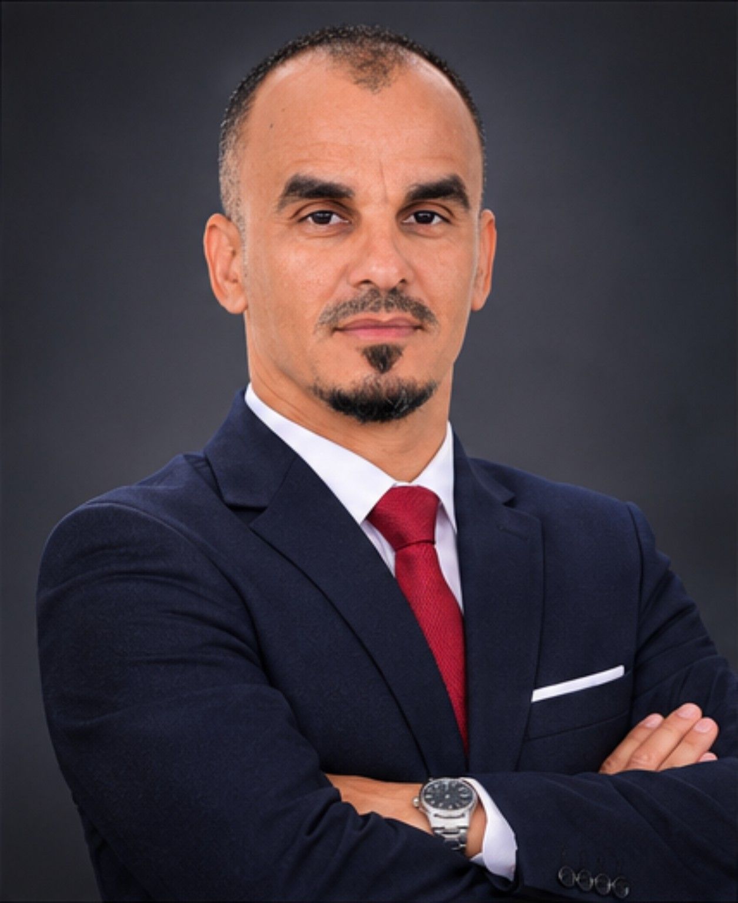
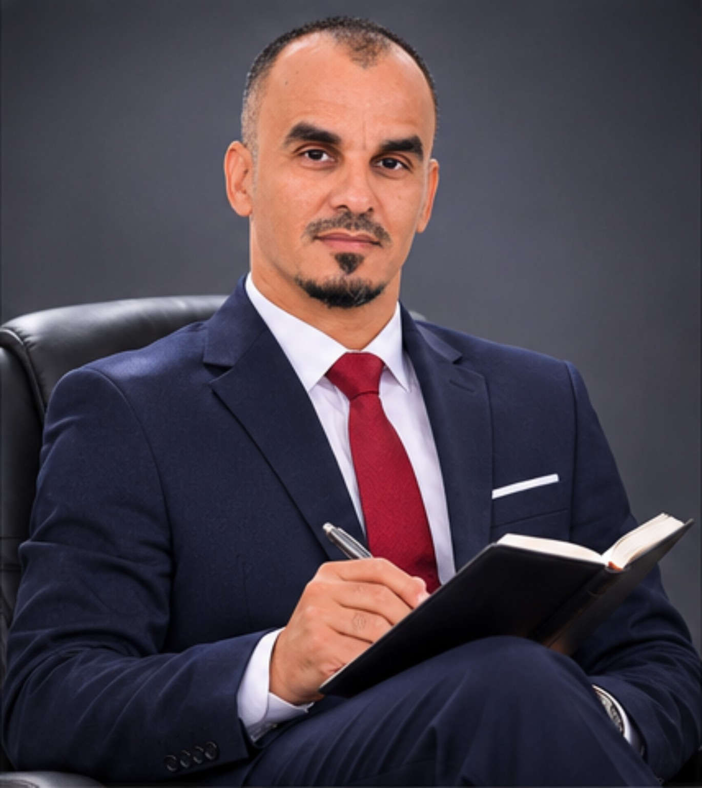
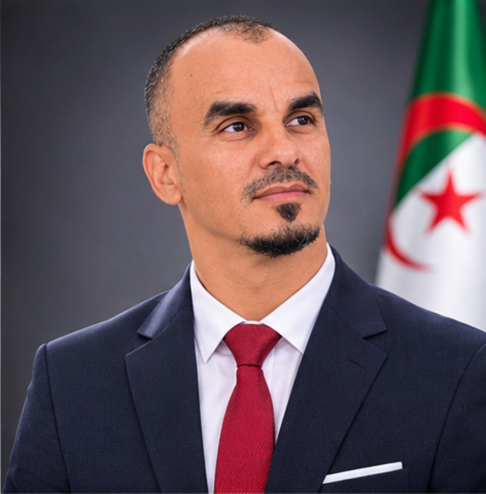
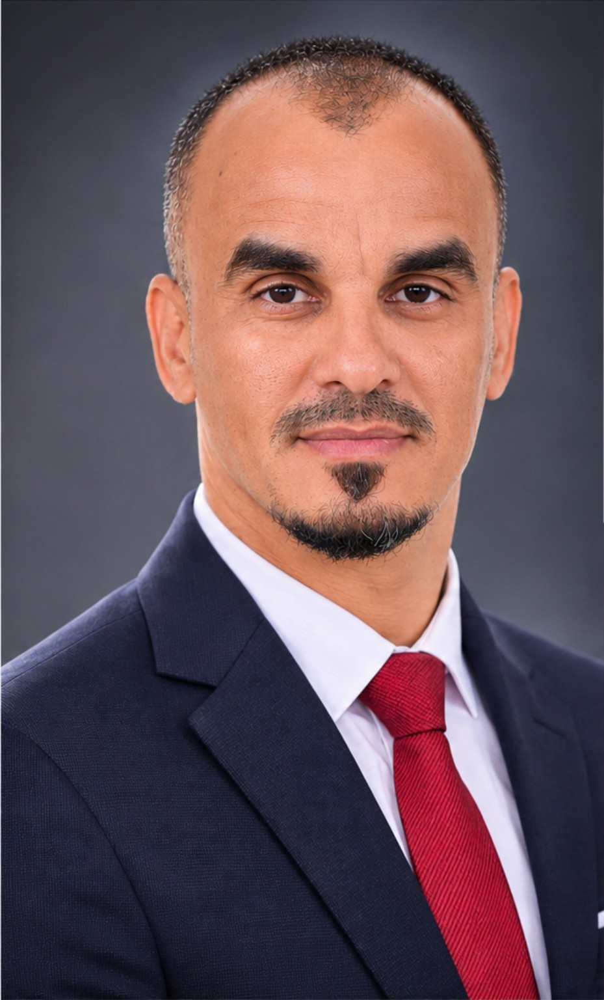

الإدارة والتعليم العالي
التسيير الإداري، التسجيلات، تنسيق الفرق والجداول والبرامج التعليمية.
الموقع الشخصي الرسمي
الإدارة · العلاقات الدولية · الترجمة · الذكاء الاصطناعي · السياحة
مسار مهني متعدد التخصصات يجمع بين التعليم العالي والتنسيق الدولي والتدريب الرقمي والعمل المجتمعي.
اكتشف مسيرتيتعرف عليّ
زكريا كرشو، مهني في مجال الإدارة والتعليم العالي والعلاقات الدولية، بخبرة تتجاوز 15 سنة في الإدارة والترجمة والتنسيق والتكوين. أعمل في بيئة جامعية، وأهتم بتطوير أساليب العمل من خلال الأدوات الرقمية والذكاء الاصطناعي.
مجالات العمل
التسيير الإداري، التسجيلات، تنسيق الفرق والجداول والبرامج التعليمية.
تنسيق الحركية والمنح والشراكات والفعاليات الأكاديمية، بما فيها برامج Erasmus+.
الترجمة والتحرير والترجمة المرئية بالعربية والإنجليزية والفرنسية.
التدريب التطبيقي في أدوات الذكاء الاصطناعي والتسويق الرقمي وصناعة المحتوى والإنتاج السمعي البصري.
تنظيم الرحلات المحلية والوطنية والخرجات السياحية والسفاري وتنسيق المجموعات.
الهوية البصرية والتصميم الغرافيكي وإنتاج المحتوى الرقمي والسمعي البصري.
المسار المهني
جامعة الوادي · التسيير الإداري والتسجيلات وتنسيق الأساتذة والجداول والبرامج.
جامعة الوادي · تنسيق الحركية الدولية والمنح والشراكات والفعاليات الأكاديمية.
New Logic Films – أوسلو (عن بُعد) · ترجمة المحتوى السمعي البصري.
التدريس في مؤسسات تعليمية مختلفة.
المشاركة المجتمعية والعامة
نشاط في المجتمع المدني منذ عام 2006، ومشاركة في المبادرات الاجتماعية والبيئية والتطوعية وحملات المساعدة.
عضو في فوج الأمير عبد القادر منذ عام 1993، والمشاركة في الأنشطة الكشفية وخدمة المجتمع.
صرّح زكريا كرشو بانتمائه إلى حزب جبهة التحرير الوطني (FLN) في الجزائر.
معلومة تعريفية وفق تصريح صاحب الموقع.الصور الشخصية




التعليم والتكوين
للتواصل المهني
ستُضاف هنا وسائل التواصل العامة بعد اعتماد عناوين البريد أو الروابط التي ترغب في نشرها.